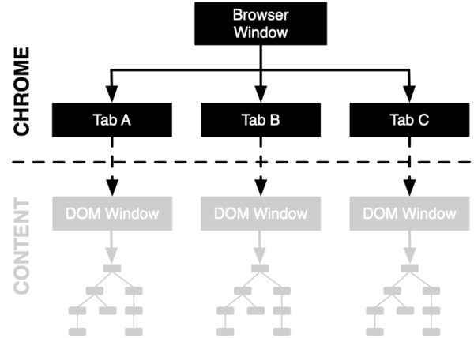

This blog post has first appeared on the Mozilla Attack & Defense blog and was co-authored with Christoph Kerschbaumer and Tom Ritter
In a recent academic publication titled Hardening Firefox against Injection Attacks (to appear at SecWeb – Designing Security for the Web) we describe techniques which we have incorporated into Firefox to provide defense in depth against code injection attacks. Within this blogpost we are going to provide insights into the described hardening techniques at a technical level with pointers to the actual code implementing it. Note that links to source code are perma-linked to a recent revision as of this blog post. More recent changes may have changed the location of the code in question.
Background on Privilege Separation in Firefox
The security architecture for separating web content and privileged (chrome) content within Firefox builds upon (1) the security boundaries provided by process separation and (2) the security boundaries provided by context separation.
-
The privileged chrome process is able to perform any action the end user has access to. In contrast, the lesser privileged content process (used for loading web content) is sandboxed and restricted from almost all access to Operating System features or user privileges.
-
The security context of the User Interface and privileged chrome code within Firefox is represented by the System-Principal. In contrast, the security context of untrusted web content builds upon the security context represented by a Content-Principal. (Please find details on the different kinds of Principals within Firefox in our recent post: Understanding Web Security Checks in Firefox).

Firefox Security Architecture showing the separation of privileged chrome code and the Tabs A, B, and C including DOM windows exhibiting unprivileged content code.
The two privilege distinctions – a privileged parent process and other lesser privileged child processes; and the privileged System Principal Context and the lesser privileged Content and Null Principal Contexts – both describe mechanisms of privilege distinction within Firefox. However, the actual mechanism by which privilege is separated is generally unimportant in the context of privilege escalation attacks, which our hardening prevents.
While process-based separation is a fairly generic architecture, Principal-based separation is specific to Gecko – the rendering engine powering Firefox. Nonetheless, tricking system-principled code into doing your bidding is just as alarming as a cross-process attack. It is considered an injection attack and exposes a significant security bypass.
Securing about: pages
Firefox ships with a variety of built-in pages, commonly referred to as about: pages. Such about: pages allow the user to view internal browser information or change settings.
If one were able to inject script into a privileged about: page it would represent a complete browser takeover in many cases. To reduce this injection attack surface, we apply a strong Content Security Policy (CSP) of default-src chrome: to all about: pages. The applied CSP restricts script to only JavaScript files bundled and shipped with the browser and accessible only via the Firefox internal chrome:// protocol. Whenever loading any kind of JavaScript, Firefox internally consults its CSP implementation by calling the function ShouldLoad() for external resources, or GetAllowsInline() for inline scripts. If the script to be executed is not allow-listed by the added CSP then Firefox will block the script execution, rendering the code injection attack obsolete.
Further, we verify that any newly added about: page within Firefox exposes a strong CSP by consulting the function AssertAboutPageHasCSP(). This function basically acts as a commit guard to our codebase and ensures that no about: page makes it into the Firefox codebase without a strong CSP.
Before we started to protect about: pages with a CSP we faced a bug where text and markup controlled by a web application was reused in a permission prompt, which led to a Universal Cross-Site Scripting (UXSS) attack in the browser interface (CVE-2018-5124). These scripts run with elevated privileges that get access to internal APIs and can result in a full system compromise. What raises the severity of such bugs is the high-level nature of the vulnerability and the highly deterministic nature of the exploit code which allowed comparably trivial exploitation.
Allowing JavaScript only from packaged sources and not allowing any inline script in any privileged context limits the attack surface of arbitrary code execution and provides a strong first line of defense against code injection attacks.
Restricting Loads in Privileged Contexts
Higher privileged contexts within Firefox have access to APIs that are capable of modifying the browser settings and its user interface. Most prominently, about:config, which exposes an API to inspect and update preferences and settings which allows Firefox users to tailor their Firefox instance to their specific needs and desires. Being able to set arbitrary preferences is powerful enough that we treat it as a full security bypass.
We ensure that privileged APIs (such as those that allow setting preferences) are restricted to HTML documents and scripts that are part of the Firefox source code. More precisely, system privileged code within Firefox should never need to load remote web content, because all the user interface code is packaged and shipped with the browser itself.
Enforcing additional restrictions on privileged APIs not only fixes an theoretical attack vector: In June 2019, we were made aware of an active exploit that combined a JavaScript JIT bug (CVE-2019-11707) to gain arbitrary code execution with a logic bug in our IPC (Inter-Process Communication) code (CVE-2019-11708). The logic bug allowed loading remote web content in the parent process. In order to gain code execution within the unsandboxed parent process, the exploit loaded itself in the parent process and exploited the same JIT engine bug again. We addressed and fixed the specific issues instantly and shipped a fix to the JIT bug and the IPC method within a few days.
In addition to fixing the specific problem, and as a defense in depth mechanism, we started to enforce additional restrictions to eliminate that entire class of security problems. By adding and consulting the function CanLoadInParentProcess() Firefox is effectively not allowing documents with a scheme other than chrome:, about: or resource: to load in the parent process. Adding this additional restriction limits document loads to the aforementioned schemes and therefore prevents any remote web document loads in the parent process.
To systematically restrict all resource loads (document and subresource loads) into system privileged context or the parent process all loads consult the function CheckAllowLoadInSystemPrivilegedContext(). Since Firefox enforces a Security by Default loading mechanism for all resource loads we build our monitoring system on top of these efforts which allows us to enforce runtime assertions for every resource load. This security mechanism ensures that Firefox can only load resources into system privileged context or the parent process if the resource is packaged and shipped with the browser, hence eliminating an entire set of privilege escalation attacks.
Restricting Eval in System Privileged Contexts
The JavaScript function eval() provides a powerful yet dangerous tool. An attacker who could inject strings into our user interface (UI) code that is then eval-ed would allow the attacker to execute script in a system privileged context, allowing a complete browser takeover
Please note that our UI is written using standard web technologies such as HTML and JavaScript. This JavaScript code runs with system privileges. Relying on internet technologies to write the browser user interface has a multitude of advantages such as rapid prototyping and quicker development cycles, but also exposes the risk of injection attacks.
To provide a defense in depth mechanism against string injection attacks which would turn into executable code at runtime, we removed all instances of eval() in system privileged code. By consulting the function IsEvalAllowed() at runtime we ensure that all calls to eval() are blocked in system privileged contexts.
Removing all occurrences of eval() in system privileged contexts reduces the attack surface of arbitrary code execution and hence provides an additional layer of security against code injection attacks.
Restricting access through X-Ray Vision
Though Firefox has been shipping with a hardening mechanism known as X-Ray Vision for a multitude of years, X-Ray Vision builds the foundation for the hardening work we are presenting in this blogpost. Not having X-Ray vision would render all additional hardening efforts obsolete, hence it’s worth sketching out fundamentals about that security mechanism within this blogpost.
Firefox runs JavaScript from a variety of different sources and at a variety of different privilege levels, and at times these privilege levels must interact. The security machinery in Firefox ensures that there is asymmetric access between code at different privilege levels. In more detail, Firefox ensures that web content code can not access JavaScript objects created by chrome code, but chrome code can access objects created by content. However, even the ability to access content objects can be a security risk for chrome code.
Almost a decade ago, Mozilla realized the importance of secure interactions between privileged Javascript code belonging to the browser application and web content script. Within the Meta Bug 929539 and its dependencies, Firefox created the concept of X-Ray vision to mitigate an entire class of privilege escalation attacks.
The fundamental principle of X-Ray Vision is that dynamic content-controlled data is only exposed through well-defined access points for a given object type. When a privileged script accesses an object, it sees only the native version of the object. If any properties of the object have been redefined by web content, it sees the original implementation, not the redefined version.
X-Ray Vision is implemented by identifying the separation of execution contexts of JavaScript. Once this identification is made, we can extend the checks logically. If content code somehow got a reference to an object from a higher privilege level, then trying to dereference that handle is where access would actually be blocked. And similarly, although two origins are the same privilege level insomuch as they are both content-privileged; they are separate execution contexts and are also blocked. Hence, X-Ray Vision provides a systematic guard to eliminate an entire set of privilege escalation problems within Firefox.
Going Forward
Adding layers of security allows us to harden the codebase of Firefox against all injection attacks we are not aware of or may get introduced in the future. We encourage contributors, hackers, and bug bounty hunters to verify there are no flaws in our design. While the provided mechanisms provide a solid line of defense we would like to call out that bypassing any of the presented defense in depth mechanisms is eligible for a bug bounty.